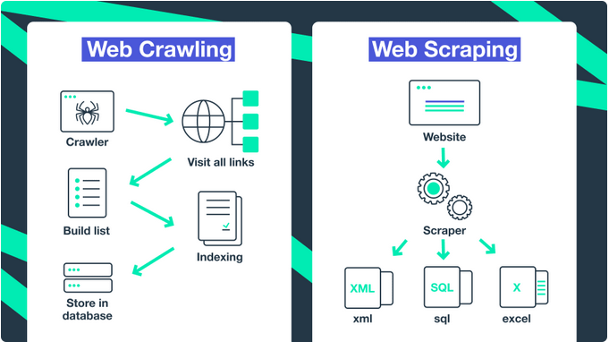

Web Scraping
Contents
Web Scraping#
Inhalte#
Was ist Web Scraping?
Die Grundlagen von Webseiten verstehen
Einen Scraper in Python bauen
Was ist Web Scraping?#
to scrape: etw. abkratzen, schaben, schürfen
Unter Web Scraping versteht man das Extrahieren (oder Abkratzen) von Inhalten und Daten von Webseiten.
Ein Scraper ist ein Programm (Python-Skript) mit zwei Kernaufgaben:
dem Aufrufen der gewünschten Webseiten
die Extraktion und Ablage der relevanten Informationen
Quelle: https://kinsta.com/de/wissensdatenbank/was-ist-web-scraping/
Web Crawling vs. Web Scraping#

Quellen:
https://limeproxies.netlify.app/blog/crawling-vs-scraping
https://dev.to/soax/web-crawling-vs-web-scraping-what-is-the-difference-4chl
Wann benutzen wir Scraper?#
Wenn die gewünschten Daten nicht verfügbar sind:
keine Datenfiles (csv, json, excel, etc.)
keine API Schnittstelle
Wenn die Informationen auf einer (oder mehreren) Webseiten
strukturiert abrufbar sind
nicht hinter Paywalls, Passwörtern oder Captchas versteckt sind
Ist Scrapen legal?#
Die kurze Antwort: Meistens ja, aber es kommt drauf an.
Öffentlich zugängliche Daten, also Inhalte ohne “Schutzvorrichtungen”, zu sammeln ist legal unter Berücksichtigung des Urheberrechts und bei personenbezogenen Daten auch der DSGVO.
Quelle: https://www.computerwoche.de/a/was-ist-scraping,3551081
Robots.txt#
Viele Webseiten veröffentlichen eine robots.txt Datei. Diese zeigt an ob und wie Bots auf der Seite erlaubt sind.
Beispielsweise:
Die Grundlagen von Webseiten verstehen#
Die Grundlage einer Webseite besteht aus einem Hypertext Markup Language (HTML) File. Dieses teilt die Seite in Abschnitte ein und definiert welche Textabschnitte Überschriften oder Paragraphen sind.
Mit Cascading Style Sheets (CSS) wird das Design festgelegt, beispielsweise die Schriftart und Schriftfarbe oder die Abstände zwischen Textelementen.
Zusätzlich wird JavaScript verwendet um PopUps oder interaktive Elemente auf eine Webseite einzufügen.
Die Entwicklertools im Browser helfen eine Seite zu verstehen.
Einen Scraper bauen#
!pip install requests
import requests
url = 'https://www.mdr.de/nachrichten/sachsen/index.html'
response = requests.get(url)
---------------------------------------------------------------------------
NameError Traceback (most recent call last)
Cell In [1], line 2
1 url = 'https://www.mdr.de/nachrichten/sachsen/index.html'
----> 2 response = requests.get(url)
NameError: name 'requests' is not defined
response
dir(response)
response.status_code
response.json()
response.text
type(response.text)
'Wetter' in response.text
response.text.find("title")
response.text[170:250]
BeautifulSoup#
Beautiful Soup is a Python library for pulling data out of HTML and XML files. It works with your favorite parser to provide idiomatic ways of navigating, searching, and modifying the parse tree. It commonly saves programmers hours or days of work.
Dokumentation: https://beautiful-soup-4.readthedocs.io/en/latest/
!pip3 install beautifulsoup4
import requests
from bs4 import BeautifulSoup
results = BeautifulSoup(response.text, 'html.parser')
results
type(results)
dir(results)
Nachrichtenblöcke finden#
teaser = results.find_all('div', class_='teaser')
teaser
teaser = results.find_all('a', class_='linkAll')
teaser
type(teaser)
len(teaser)
teaser[0]
teaser[1]
Aufgabe#
Finde alle Überschriften (Headlines) auf der Seite
headlines
headlines[0]
type(headlines[0])
Beautiful Soup Tag Element#
https://beautiful-soup-4.readthedocs.io/en/latest/#kinds-of-objects
dir(headlines[0])
headlines[0].text
Aufgabe#
Iteriere durch alle Headlines und gibt den Text aus
Duplikate entfernen#
# Duplikate entfernen
titel = []
for headline in headlines:
clean_headline = headline.text.strip()
if clean_headline not in titel:
titel.append(clean_headline)
# Titel ausgeben
for elem in titel:
print(elem)
Auf Links zugreifen#
headlines
headlines[0].get('title')
headlines[0].get('href')
Titel und Link in Dictionary speichern#
data = []
titel = []
for headline in headlines:
clean_headline = headline.text.strip()
if clean_headline not in titel:
current_data = {'titel': clean_headline,
'link': headline.get('href')}
data.append(current_data)
titel.append(clean_headline)
# Einzelnen Elemente ausgeben
for elem in data:
print(elem)
data[0]
Daten in Dataframe umwandeln und speichern#
import pandas as pd
df = pd.DataFrame(data)
df
df.to_csv('nachrichten_sachsen.csv')
Informationen auf den einzelnen Seiten holen#
data[0]['link']
base_url = "https://www.mdr.de/"
url = base_url + data[0]['link']
print(url)
response = requests.get(url)
result = BeautifulSoup(response.text, 'html.parser')
result
Den Autor extrahieren#
author = result.find('p', class_='author').text
author
Das Veröffentlichungsdatum extrahieren#
webtime = result.find('p', class_='webtime')
dateinfo = webtime.select('span')
dateinfo
dateinfo[1].text
full_date = dateinfo[1].text + dateinfo[2].text
Abstecher: Timestamps in Python#
String Datum in Datetime umwandeln.
Module: Datetime
Funktion: Strptime https://www.geeksforgeeks.org/python-datetime-strptime-function/
from datetime import datetime
import locale
locale.setlocale(locale.LC_ALL, 'de_DE.utf8')
datetime.strptime(dateinfo[1].text, '%d. %B %Y, ')
full_date
from datetime import datetime
import locale
locale.setlocale(locale.LC_ALL, 'de_DE.utf8')
def create_timestamp(elements):
date = elements[1].text
time = elements[2].text
return datetime.strptime(date + time, '%d. %B %Y, %H:%M Uhr')
create_timestamp(dateinfo)
Aufgabe:#
Extrahiere von allen gespeicherten Links die Autoren und das zugehörige Veröffentlichungsdatum